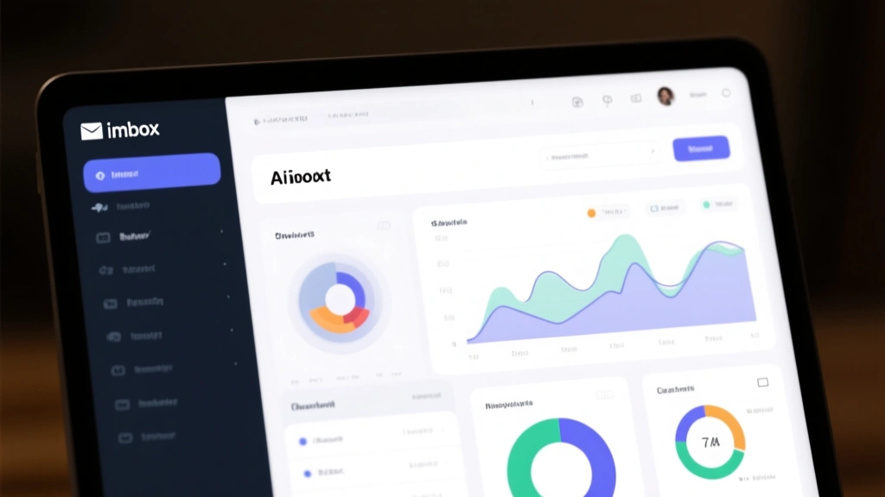

In a crowded inbox, your cadence is the unseen drumbeat that decides whether your emails land or get forgotten. The trick is not more emails, but smarter timing, smarter segments, and a cadence that adapts as engagement shifts.
1) Map the real engagement signals
Open rate isn’t dead, but it’s a blunt instrument. Track with a composite score—opens, clicks, forwards, and conversions—weighted by your goal. A model that flags high-intent actions (repeat visits, multiple clicks, long dwell) gives you a true signal for when to increase or decrease cadence.
2) Segment by engagement recency, not just date
Engagement is a spectrum. Create tiers like Active, At-Risk, Dormant, and Reactivated, and adjust send frequency per tier. The point isn’t to punish inactive subscribers but to reallocate attention to those most likely to convert.
3) Build a governance checklist for cadence changes
Before you move a single send, run through a formal checklist: business impact, deliverability risk, suppression rules, and stakeholder sign-off. Document a rollback plan for every change.
Two-column: Problem vs. Solution
Teams push more emails to meet quarterly goals, but fatigue creeps in. Deliverability worsens as sending density increases, and the ROI of each send drops.
Adopt a data-driven cadence. Start with a baseline, then reduce frequency for at-risk segments while increasing touchpoints for highly engaged users. Use governance and rollback plans to stay safe.
- Define baseline cadence (e.g., 1–2 emails/week) and a 90-day review window
- Create engagement tiers and map cadence per tier
- Set suppression rules for high deliverability risk events
Image-driven tips
Use visuals to reinforce timing concepts in your onboarding and re-engagement emails. A simple timeline graphic set can reduce cognitive load for readers deciding when to expect future messages.

4) Roll out, monitor, and iterate
Begin with a soft launch, keep a tight guardrail, and adjust after 4–6 weeks based on the composite engagement score. Document performance, not just vanity metrics.
The Bottom Line
Cadence optimization is a governance problem as much as a marketing one. Use data-led segmentation, a formal change process, and a rollback plan to keep readers engaged without driving fatigue.